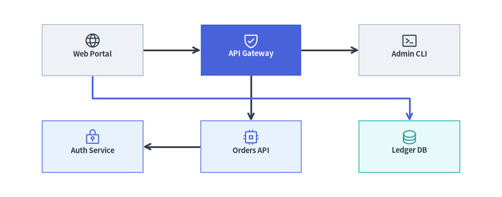
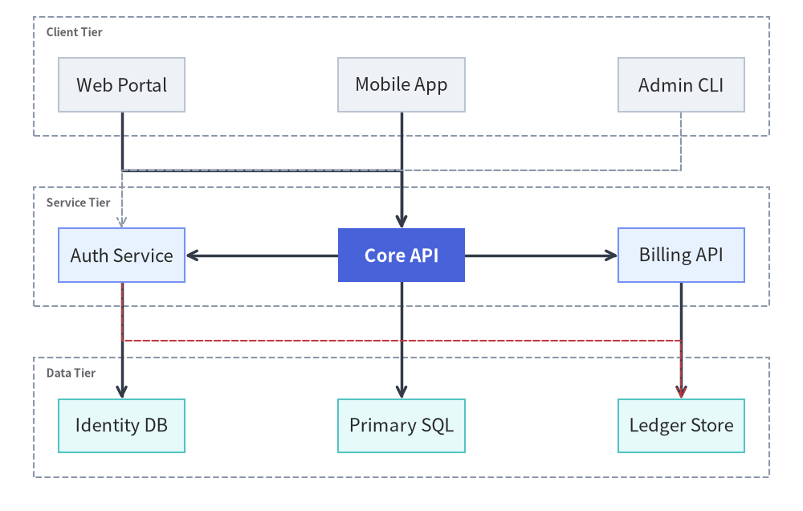
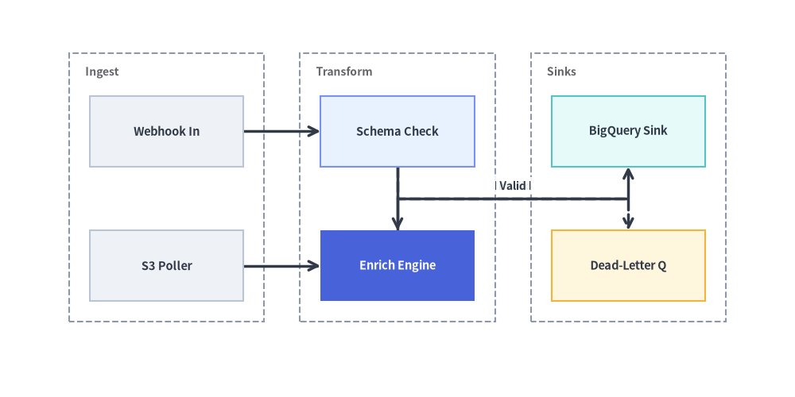

GridGraph: 2D Matrix Layouts & Channel Edge Routing
GridGraph places nodes into a structured 2D (row, col) matrix and routes edges cleanly between cells. While adjacent horizontal or vertical neighbors connect directly, non-adjacent cross-edges are automatically routed through inter-row and inter-column highway channels (edge_routing="smart") so lines never cut across intermediate nodes.
Use GridGraph when you want tabular alignment across rows and columns—such as multi-tier service matrices, state grids, periodic/catalog topologies, or grid-aligned component architectures.

Source Code
from drawlib.canvas import save, setup
from drawlib.graph import GridGraph
from drawlib.icons import phosphor
from drawlib.styles import Styles
setup(width=122, height=48)
g = GridGraph(
columns=3,
col_sep=14.0,
row_sep=11.0,
edge_routing="smart",
default_node_width=24.5,
default_node_height=12.5,
default_node_text_style=Styles.DarkBold.patch(text_size=10.5),
)
# Row 0: Ingress & Routing Tier
g.cell("web", row=0, col=0, label="\nWeb Portal", style=Styles.Neutral)
g.cell(
"gateway",
row=0,
col=1,
label="\nAPI Gateway",
style=Styles.PrimaryFlat,
text_style=Styles.WhiteBold.patch(text_size=10.5),
)
g.cell("admin", row=0, col=2, label="\nAdmin CLI", style=Styles.Neutral)
# Row 1: Service & Persistence Tier
g.cell("auth", row=1, col=0, label="\nAuth Service", style=Styles.PrimaryNeutral)
g.cell("orders", row=1, col=1, label="\nOrders API", style=Styles.PrimaryNeutral)
g.cell("ledger", row=1, col=2, label="\nLedger DB", style=Styles.SecondaryNeutral)
# Direct grid edges + smart channel-routed edge through the inter-row corridor around col=1
g.edge("web", "gateway")
g.edge("gateway", "admin")
g.edge("gateway", "orders")
g.edge("orders", "auth")
g.edge("web", "ledger", style=Styles.PrimaryBold)
layout = g.draw(margin=5.0)
for nid, icon_fn, st in [
("web", phosphor.globe, Styles.Dark),
("gateway", phosphor.shield_check, Styles.White),
("admin", phosphor.terminal_window, Styles.Dark),
("auth", phosphor.lock_key, Styles.Primary),
("orders", phosphor.cpu, Styles.Primary),
("ledger", phosphor.database, Styles.Secondary),
]:
n = layout.nodes[nid]
icon_fn((n.x, n.y + 2.3), width=4.2, style=st)
save()
1. Constructor & Matrix Helper API
from drawlib.graph import GridGraph
from drawlib.styles import Styles
g = GridGraph(
columns=3, # Number of grid columns (default: 3)
rows=None, # Optional fixed row count (used in column-major mode)
order="row-major", # Auto-flow fill order: "row-major" or "column-major"
col_sep=16.0, # Horizontal gap between columns (auto-scales if None)
row_sep=14.0, # Vertical gap between rows (auto-scales if None)
edge_routing="smart", # "smart" (channel routing), "orthogonal", or "straight"
default_node_style=Styles.Neutral,
default_edge_style=Styles.DarkBold,
default_node_width=24.0,
default_node_height=12.0,
)
Parameter Reference
| Parameter | Type | Default | Description |
|---|---|---|---|
columns |
int |
3 |
Number of columns in the grid matrix. |
rows |
int | None |
None |
Optional fixed number of rows (primarily used when order="column-major"). |
order |
Literal["row-major", "column-major"] |
"row-major" |
Automatic slot assignment order for nodes without explicit (row, col) coordinates. |
col_sep |
float | None |
None |
Fixed horizontal gap between columns. Auto-scales to canvas if None. |
row_sep |
float | None |
None |
Fixed vertical gap between rows. Auto-scales to canvas if None. |
edge_routing |
Literal["smart", "orthogonal", "straight"] |
"smart" |
"smart" routes non-adjacent edges through inter-cell channels; "orthogonal" uses standard Z/L bends; "straight" draws direct lines. |
default_node_style |
Style | None |
None |
Default style for grid cells (defaults to Styles.PrimaryFlat). |
default_node_text_style |
Style | None |
None |
Default typography style for cell labels. |
default_edge_style |
Style | None |
None |
Default line style for edges (defaults to Styles.DarkBold). |
default_edge_text_style |
Style | None |
None |
Default text style for edge labels. |
default_node_width |
float |
20.0 |
Default node width in canvas units. |
default_node_height |
float |
12.0 |
Default node height in canvas units. |
Matrix Cell & Row/Column Cluster Methods
g.cell(cell_id, row=None, col=None, label=None, *, style=None, text_style=None, shape="rectangle", width=None, height=None, show=True) -> Node: Registers a node pinned to(row, col)(0-based, whererow=0, col=0is the top-left cell), or leavesrow/colasNoneto auto-flow into the next available slot.g.cluster_row(row, cluster_id, label=None, *, style=None, text_style=None, padding=4.0, show=True) -> Cluster: Automatically encloses all nodes placed inrowinside a horizontal band container.g.cluster_column(col, cluster_id, label=None, *, style=None, text_style=None, padding=4.0, show=True) -> Cluster: Automatically encloses all nodes placed incolinside a vertical column container.g.cluster(id, nodes, label=None, *, style=None, text_style=None, padding=4.0, show=True) -> Cluster: StandardBaseGraph.cluster()can also be used alongsidecluster_row()andcluster_column()to enclose any arbitrary subset of grid cells (such as a $2 \times 2$ sub-matrix or adjacent pair of cells) inside a bounding rectangle.
2. Explicit (row, col) Component Matrix with Row Clusters & Cross-Edges
By pinning nodes to explicit (row, col) coordinates and grouping rows with g.cluster_row(...), you can model layered client/service/storage matrices where cross-column edges route cleanly around neighboring cells:
from drawlib.canvas import save, setup
from drawlib.graph import GridGraph
from drawlib.styles import Styles
setup(width=124, height=78)
g = GridGraph(
columns=3,
col_sep=11.0,
row_sep=11.5,
default_node_width=24.0,
default_node_height=10.5,
default_node_text_style=Styles.DarkBold.patch(text_size=10.5),
)
# Row 0: Client Interfaces (calm Neutral baseline)
g.cell("fe_web", row=0, col=0, label="Web Portal", style=Styles.Neutral)
g.cell("fe_mob", row=0, col=1, label="Mobile App", style=Styles.Neutral)
g.cell("fe_cli", row=0, col=2, label="Admin CLI", style=Styles.Neutral)
# Row 1: Core Services (Core API highlighted as PrimaryFlat focal point)
g.cell("svc_auth", row=1, col=0, label="Auth Service", style=Styles.PrimaryNeutral)
g.cell("svc_core", row=1, col=1, label="Core API", style=Styles.PrimaryFlat, text_style=Styles.WhiteBold.patch(text_size=10.5))
g.cell("svc_bill", row=1, col=2, label="Billing API", style=Styles.PrimaryNeutral)
# Row 2: Persistence Layer
g.cell("db_users", row=2, col=0, label="Identity DB", style=Styles.SecondaryNeutral)
g.cell("db_main", row=2, col=1, label="Primary SQL", style=Styles.SecondaryNeutral)
g.cell("db_ledger", row=2, col=2, label="Ledger Store", style=Styles.SecondaryNeutral)
# Enclose rows in labeled horizontal containers
g.cluster_row(0, "row_clients", label="Client Tier", padding=3.2)
g.cluster_row(1, "row_services", label="Service Tier", padding=3.2)
g.cluster_row(2, "row_storage", label="Data Tier", padding=3.2)
# Direct vertical/horizontal edges + non-adjacent channel-routed cross-edges
g.edge("fe_web", "svc_core")
g.edge("fe_mob", "svc_core")
g.edge("fe_cli", "svc_auth", style=Styles.MutedDashed)
g.edge("svc_core", "svc_auth")
g.edge("svc_core", "svc_bill")
g.edge("svc_auth", "db_users")
g.edge("svc_core", "db_main")
g.edge("svc_bill", "db_ledger")
g.edge("svc_auth", "db_ledger", style=Styles.DangerDashed)
g.draw(margin=7.5)
save()

3. Auto-Flow Grid Topology with Column Clusters
When you omit row and col on g.node() or g.cell(), GridGraph automatically streams nodes into successive grid cells in "row-major" (left-to-right, top-to-bottom) or "column-major" (top-to-bottom, left-to-right) order:
from drawlib.canvas import save, setup
from drawlib.graph import GridGraph
from drawlib.styles import Styles
setup(width=124, height=62)
# Column-major order fills each 2-row column top-to-bottom before moving right
g = GridGraph(
columns=3,
rows=2,
order="column-major",
col_sep=12.0,
row_sep=10.0,
default_node_width=24.0,
default_node_height=11.0,
default_node_text_style=Styles.DarkBold.patch(text_size=10.5),
)
# Column 0 (Ingest Zone)
g.cell("webhook", label="Webhook In", style=Styles.Neutral)
g.cell("poller", label="S3 Poller", style=Styles.Neutral)
# Column 1 (Processing Zone)
g.cell("validator", label="Schema Check", style=Styles.PrimaryNeutral)
g.cell("enricher", label="Enrich Engine", style=Styles.PrimaryFlat, text_style=Styles.WhiteBold.patch(text_size=10.5))
# Column 2 (Sink Zone)
g.cell("warehouse", label="BigQuery Sink", style=Styles.SecondaryNeutral)
g.cell("dlq", label="Dead-Letter Q", style=Styles.WarningNeutral)
# Group by column
g.cluster_column(0, "col_in", label="Ingest", padding=3.2)
g.cluster_column(1, "col_proc", label="Transform", padding=3.2)
g.cluster_column(2, "col_out", label="Sinks", padding=3.2)
g.edge("webhook", "validator")
g.edge("poller", "enricher")
g.edge("validator", "enricher")
g.edge("validator", "dlq", "Invalid", line_style="dashed")
g.edge("enricher", "warehouse", "Valid")
g.draw(margin=8.0)
save()

4. Best Practices
- Choose
GridGraphvs.SmartArts.GridLayout:- Use
GridGraph(drawlib.graph) when cells are connected by directed edges (g.edge()) or grouped into row/column clusters. - Use
GridLayout(drawlib.smartarts) when displaying unlinked feature cards with headers and bullet points.
- Use
- Avoid Mixing Both
cluster_rowandcluster_columnon the Same Cell: Choose eithercluster_row(...)(horizontal tier bands) orcluster_column(...)(vertical stage columns) so dashed container borders do not intersect over the same cells.